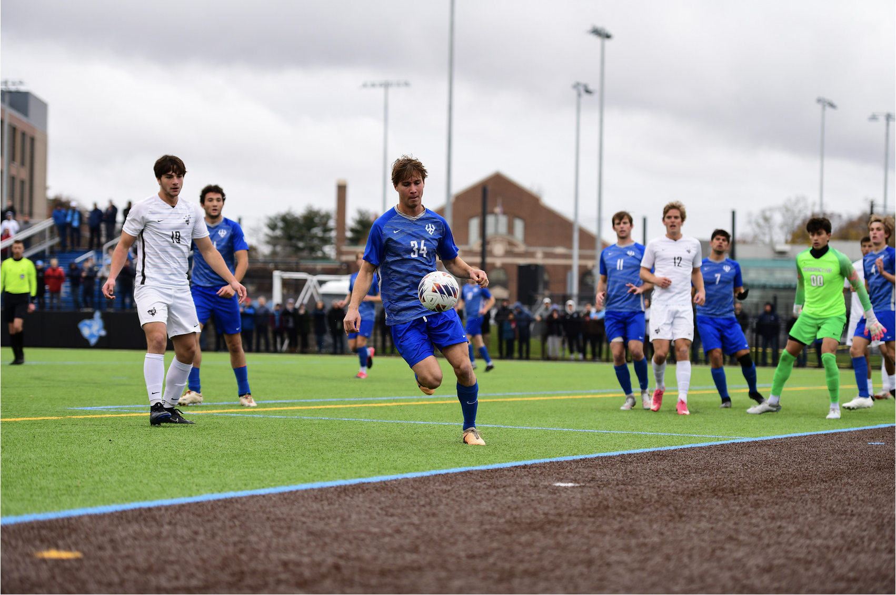

Who I Am
Hello! My name is William Luik, and I am a senior at Washington and Lee University in Lexington, Virginia, where I am majoring in physics and minoring in computer science and data science. In addition to my studies, I serve as a teaching assistant for PHYS 112 and work as a career fellow in the Career Development Office. I am also a member of the men's varsity soccer team, which has achieved national recognition, including a Final Four appearance and a #3 national ranking in the 2023 D3 soccer season.
Each summer, I have traveled across the U.S., gaining diverse professional experiences. In the summer of 2021, I worked as a dishwasher at a yacht club on an island off the coast of Massachusetts. The following summer, I conducted research on 2-D semiconductors at Montana State University in Bozeman, MT. Most recently, in the summer of 2023, I served as a strategic analyst for a small salad restaurant chain, Leaf & Grain, in Houston, TX. From semiconductors to salads, I have relished the opportunity to tackle ambiguous challenges and expand my knowledge.
I look forward to continuing my passion for learning as I embrace whatever life has in store.
